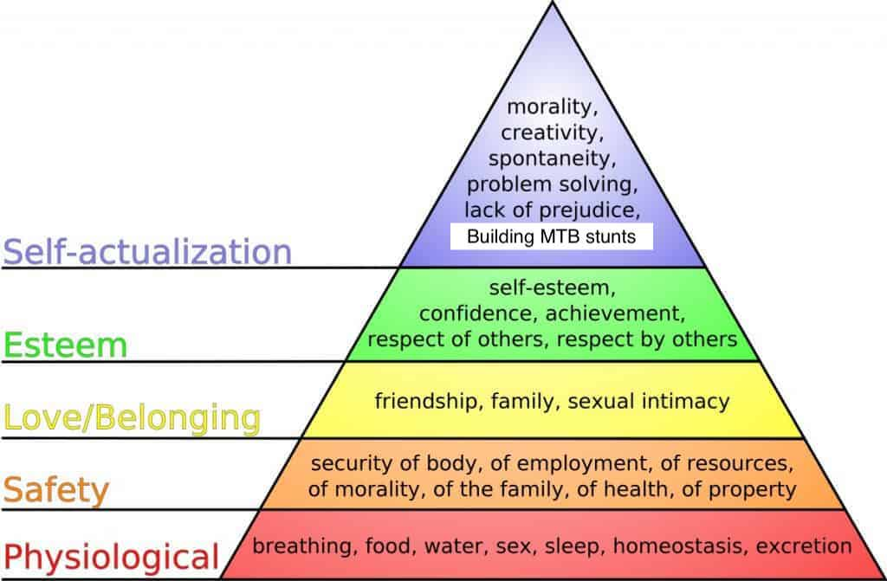

A core tenet of my life philosophy is that creating, building, and developing often, but not always, leads to a fulfilling and satisfying life. While these three verbs are similar, they are also distinct. Creation is the forming something from nothing. Building is the forming of something from pre-existing materials. Developing is the continual improvement of creations or buildings.
In Maslow's hierarchy of needs,
